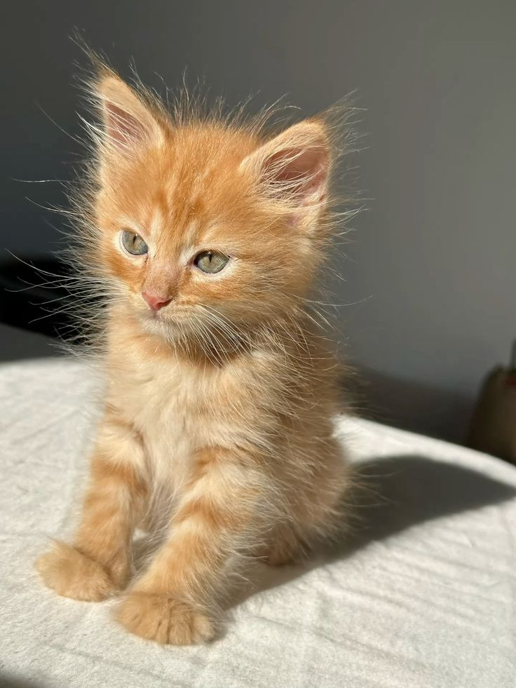

Правила ухода
Когда вы берете котенка из приюта, важно обеспечить ему комфорт, безопасность и правильный уход. Вот основные правила:
-
Подготовка дома перед приемом котенка
- Безопасность: Уберите провода, ядовитые растения, мелкие предметы, закройте щели (например, под мебелью).
- Место для отдыха: Подготовьте уютный домик, лежачку или корзинку с мягкой подстилкой.
- Лоток: Поставьте в тихом месте, подберите наполнитель (лучше уточнить в приюте, какой привык использовать котенок).
- Миски: Отдельные для воды и еды (керамические или металлические).
-
Первые дни в новом доме
- Тишина и покой: Ограничьте шум, не навязывайте общение, дайте котенку освоиться.
- Знакомство с домом: Поначалу ограничьте пространство одной комнатой, постепенно расширяя территорию.
- Контроль за детьми и другими животными: Знакомьте их постепенно, под присмотром.
-
Питание
- Корм: Уточните в приюте, чем кормили котенка, и первые дни придерживайтесь того же рациона. Переход на новый корм делайте постепенно (в течение 5–7 дней).
- Режим: Кормите 3–4 раза в день маленькими порциями (для котят до 6 месяцев).
- Запрещено: Молоко (у многих котят непереносимость), еда со стола (особенно острое, соленое, сладкое).
-
Гигиена и здоровье
- Лоток: Чистите ежедневно, котят приучайте сразу (можно аккуратно сажать после еды и сна).
- Шерсть: Вычесывайте 1–2 раза в неделю (если котенок длинношерстный – чаще).
- Когти: Подстригайте специальными щипчиками (только кончики, не задевая розовую часть).
- Ветеринар: В первые дни посетите врача для осмотра, вакцинации и обработки от паразитов.
-
Воспитание и игры
- Игрушки: Мячики, перьевые удочки, мышки – чтобы котенок не скучал и не портил мебель.
- Запреты: Не разрешайте кусать руки (лучше перенаправлять на игрушки).
- Ласка: Говорите спокойно, не наказывайте физически – только строгий голос.
-
Безопасность на улице
- Выгул: Только с шлейкой и после прививок.
- Рекомендация: Лучший вариант – жизнь в доме без свободного выгула (опасность машин, собак, инфекций).
-
Любовь и терпение
- Адаптация: Котенок может первое время бояться, прятаться или мяукать – это нормально.
- Результат: Постепенно он привыкнет и станет вашим верным другом!
Если что-то беспокоит (отказ от еды, вялость, проблемы с туалетом) – сразу обращайтесь к ветеринару.
Главное – дарите котенку заботу, и он ответит вам любовью!
